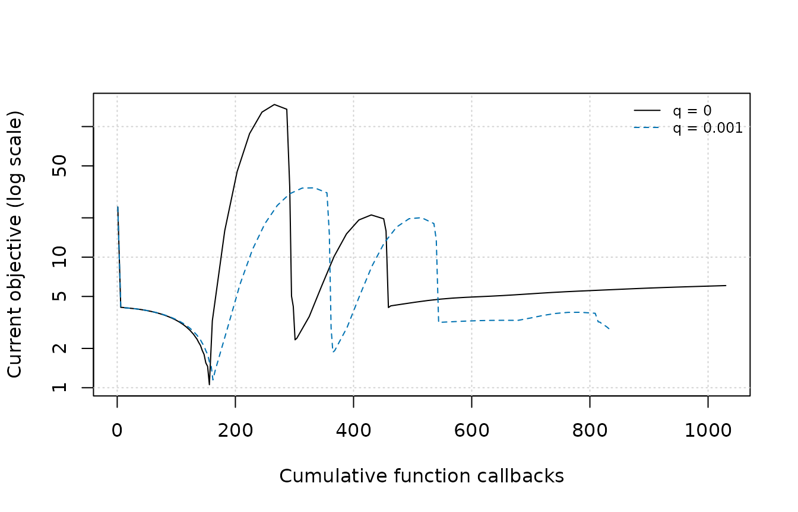
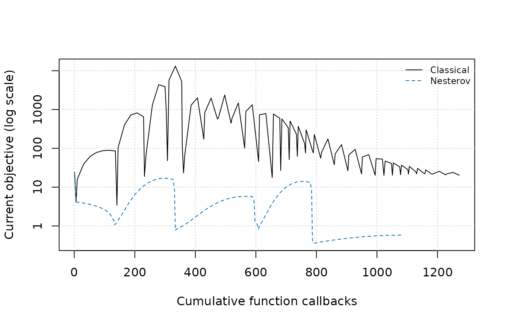
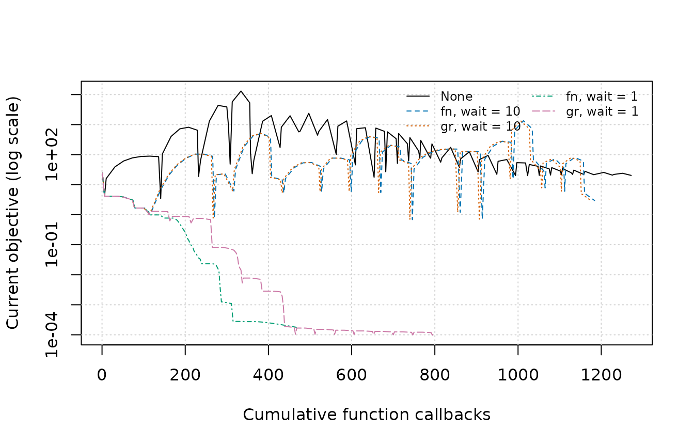

This guide helps you decide whether a concrete problem or diagnostic justifies changing the default optimizer. Start with Getting started for a first optimization, then return here to choose a direction method, investigate a line search, or run a controlled experiment with a specialized update.
Start here
For a smooth objective with an analytic gradient, begin with the
default "L-BFGS" method and line search. It builds a
limited-memory curvature model, so it is a useful baseline across a wide
range of problem sizes. Record the metric that matters for your
application—such as callback count, elapsed time, or objective value at
a fixed budget—before comparing alternatives.
Before changing the method
Check the problem setup and the evidence first:
- Validate the analytic gradient at representative points.
- Examine parameter and objective scaling.
- Distinguish an expensive line search from a failed search by inspecting its diagnostic fields.
- Confirm that memory or derivative availability is the actual constraint.
- Decide whether the comparison concerns iterations, callbacks, elapsed time, best objective, or the final iterate.
These checks often identify a local tuning problem without changing the direction method. The Convergence guide explains how stopping rules and budgets affect the result being compared.
Change the direction method when
| Method | Consider it when | Main trade-off or diagnostic |
|---|---|---|
"L-BFGS" |
You need a general smooth-problem baseline |
memory trades curvature history for storage |
"BFGS" |
Dense state is affordable | Inverse-Hessian storage is quadratic in the parameter count |
"SR1" |
You want a dense alternative to BFGS | Safeguards may fall back to BFGS or steepest descent |
"NEWTON" |
A reliable Hessian or inverse Hessian is available | Construction and factorization can dominate; inspect
direction_reason after a fallback |
"TN" |
The problem is large and Hessian-free inner work is acceptable | Gradient differences drive an iterative inner solve |
"CG" |
Low storage matters and you can tune a nonlinear-CG configuration | Update choice, scaling, and line-search behavior all matter |
"SD" |
You need a baseline or know a suitable learning rate | Progress depends strongly on the step-size strategy |
"NAG" or "Momentum"
|
Momentum behavior is the subject of the experiment | Define a schedule and compare nonmonotone trajectories explicitly |
"DBD" |
You want a per-coordinate adaptive learning-rate experiment | Its update controls both direction scaling and step size |
"PHESS" reuses a partial-Hessian factorization when
fg$hs is available. It remains experimental/internal, so it
is documented for completeness rather than recommended as a normal
starting point. For algorithmic background on the general direction
methods, see Nocedal
and Wright.
Each method-specific control has a fixed scope. For example,
memory applies to L-BFGS and to the optional L-BFGS
preconditioner for CG or TN; cg_update applies only to CG;
and tn_init and tn_exit apply only to TN.
Other methods ignore those controls. The same rule applies to step-size
controls: DBD ignores line_search, and Wolfe-only controls
are ignored by constant and bold-driver steps. See ?mize for the complete
accepted values and control scopes.
Tune the line search when
Most methods choose a direction and then use line_search
to choose how far to move. Inspect the diagnostic associated with the
symptom before changing a control.
| Symptom | First evidence to inspect | Possible next action |
|---|---|---|
| Many evaluations inside each search |
ls_nf, ls_ng, alpha_init, and
ls_reason
|
Revisit scaling, the initial-step rule, or the curvature tolerance |
| Repeated searches find no usable step | Gradient accuracy, ls_outcome, and
direction_reason
|
Correct the gradient or scaling; then reconsider method/search compatibility |
| Quasi-Newton steps are repeatedly shortened | Accepted alpha, local model quality, and parameter
scaling |
Compare try_newton_step policies or rescale the
problem |
| A stable learning rate is already known | Whether a search supplies useful adaptation | Use a constant step in a controlled run |
| Callback cost must be capped per search |
ls_nf, ls_ng, and the global callback
totals |
Set local search budgets while retaining global hard budgets |
| Choice | What it accepts | Useful starting context |
|---|---|---|
"More-Thuente" |
Strong Wolfe conditions by default | Default for direction methods, including quasi-Newton and CG |
"Rasmussen" or "Schmidt"
|
Strong Wolfe conditions by default | Alternative Wolfe implementations for comparison or troubleshooting |
"Hager-Zhang" |
Standard curvature plus approximate Armijo by default | CG-oriented Wolfe search with Hager-Zhang initializers |
"Backtracking" |
Armijo sufficient decrease | Simpler search when a curvature condition is unnecessary |
"Bold Driver" |
Any finite objective decrease | Heuristic adaptation from the preceding accepted step |
"Constant" |
No search; always uses numeric step0
|
Known learning rate or a controlled experiment |
c2, strong_curvature, and
approx_armijo apply only to Wolfe searches. c1
also applies to Armijo backtracking. Bold driver and constant steps
ignore those controls, and ls_max_alpha and
ls_safe_cubic are More-Thuente-specific.
Wolfe conditions and c2
For a direction \(p\), define the line function \(\phi(\alpha) = f(x + \alpha p)\) and assume the initial slope \(\phi'(0) = g(x)^T p\) is negative. Wolfe searches require sufficient decrease and a curvature condition. Under the strong curvature condition,
\[ |\phi'(\alpha)| \leq c_2 |\phi'(0)|. \]
A smaller c2 makes the right-hand side smaller and the
condition stricter; a larger c2 makes it looser. The same
relationship holds for the standard curvature condition because the
initial slope is negative. c2 must lie strictly between
c1 and 1.
The CG default is c2 = 0.1. The next comparison changes
only c2, holding the start, direction update, line search,
initializer, and four-iteration budget fixed. Proposed and selected step
lengths show how the search responded; local work reports function and
gradient callbacks owned by that outer search.
c2_runs <- lapply(c(`0.1` = 0.1, `0.5` = 0.5), function(c2_value) {
mize(
rb0,
rb_fg,
method = "CG",
cg_update = "HZ+",
line_search = "More-Thuente",
c2 = c2_value,
step_next_init = "hz",
max_iter = 4,
abs_tol = NULL,
rel_tol = NULL,
grad_tol = NULL,
ginf_tol = NULL,
step_tol = NULL,
store_progress = TRUE
)
})
c2_diagnostics <- do.call(rbind, lapply(seq_along(c2_runs), function(i) {
progress <- c2_runs[[i]]$progress
progress <- progress[!is.na(progress$ls_reason), , drop = FALSE]
data.frame(
`c2` = names(c2_runs)[i],
Iteration = seq_len(nrow(progress)),
`Proposed alpha` = progress$alpha_init,
`Selected alpha` = progress$alpha,
`Reason / outcome` = paste(progress$ls_reason, progress$ls_outcome, sep = " / "),
`Local work (fn / gr)` = paste(progress$ls_nf, progress$ls_ng, sep = " / "),
check.names = FALSE
)
}))
rownames(c2_diagnostics) <- NULL
c2_display <- c2_diagnostics
c2_display[["Proposed alpha"]] <- formatC(
c2_display[["Proposed alpha"]],
format = "g",
digits = 4
)
c2_display[["Selected alpha"]] <- formatC(
c2_display[["Selected alpha"]],
format = "g",
digits = 4
)
knitr::kable(c2_display)| c2 | Iteration | Proposed alpha | Selected alpha | Reason / outcome | Local work (fn / gr) |
|---|---|---|---|---|---|
| 0.1 | 1 | 1.844e-05 | 0.0007904 | wolfe / wolfe | 4 / 4 |
| 0.1 | 2 | 0.002945 | 0.002945 | wolfe / wolfe | 2 / 1 |
| 0.1 | 3 | 1.245 | 0.07751 | wolfe / wolfe | 6 / 5 |
| 0.1 | 4 | 0.155 | 0.001196 | wolfe / wolfe | 6 / 5 |
| 0.5 | 1 | 1.844e-05 | 0.0003873 | wolfe / wolfe | 3 / 3 |
| 0.5 | 2 | 0.0003956 | 0.0003956 | wolfe / wolfe | 2 / 1 |
| 0.5 | 3 | 0.000479 | 0.000479 | wolfe / wolfe | 2 / 1 |
| 0.5 | 4 | 0.148 | 0.494 | wolfe / wolfe | 5 / 4 |
For this run, changing the curvature tolerance changes accepted step
lengths and callback work. ls_reason records why a search
stopped, while ls_outcome classifies the point it selected;
the two fields answer different diagnostic questions. The callback
counts exclude the cached starting point and belong only to the current
outer line search.
More-Thuente, Rasmussen, and Schmidt use strong curvature with the
exact Armijo condition by default. Hager-Zhang uses the standard
curvature condition with the approximate Armijo condition by default.
strong_curvature and approx_armijo can
override those choices. Such an override changes the conditions whose
theory applies, so make it an explicit part of the experiment.
Initial step estimates
Leave the initializer defaults in place unless diagnostics show
repeated poor proposals or you need to reproduce another implementation.
Hager-Zhang uses its own first-step estimator by default; the other
gradient searches default to Rasmussen. A positive finite numeric
step0 bypasses the named formulas.
Exact initial-step formulas
On the first outer iteration, the named step0 choices
use the starting gradient \(g\) and
direction \(p\). Write the directional
derivative as \(\phi'(0) = g^T
p\).
-
"rasmussen": \(1 / (1 - \phi'(0))\). For steepest descent, this becomes \(1 / (1 + \lVert g \rVert_2^2)\). -
"scipy": \(-\lVert g \rVert_2 / \phi'(0)\). For steepest descent, where \(p = -g\), this reduces to \(1 / \lVert g \rVert_2\). -
"schmidt": \(1 / \lVert g \rVert_1\); there is no added 1 in the denominator. -
"hz": Hager-Zhang scaling based first on the relative infinity norms of the parameters and gradient, then on the objective and squared gradient norm, with a safeguarded fallback.
After the first iteration, step_next_init can use a
slope ratio, quadratic interpolation, the Hager-Zhang "hz"
rule, or a fixed positive number. The Hager-Zhang rule may make one
objective-only probe to fit a quadratic. It does so only when a previous
step exists and both the local line-search budgets and the remaining
hard budgets leave room for the probe and a subsequent search. Otherwise
it falls back to an enlarged, safeguarded version of the previous step.
A probe is included in ls_nf.
try_newton_step adjusts a calculated proposal upward, at
most to the natural unit step of 1. Its current default is
TRUE for "NEWTON", "PHESS",
"BFGS", "SR1", "L-BFGS", and
"TN", and FALSE otherwise. Set it explicitly
when comparing initialization policies.
Backtracking, constant, and bold-driver steps
Armijo backtracking repeatedly reduces the candidate until it
provides the decrease controlled by c1. With
step_down = NULL, the implementation uses cubic
interpolation and evaluates function and gradient at candidate points. A
numeric step_down instead multiplies the candidate by that
factor and uses function-only candidate evaluations.
backtracking_res <- mize(
rb0,
rb_fg,
method = "SD",
line_search = "Backtracking",
step0 = 1,
step_down = 0.5,
max_iter = 10
)
constant_res <- mize(
rb0,
rb_fg,
method = "SD",
line_search = "Constant",
norm_direction = TRUE,
step0 = 0.01,
max_iter = 10
)
bold_res <- mize(
rb0,
rb_fg,
method = "SD",
line_search = "Bold Driver",
step_down = 0.5,
step_up = 1.1,
max_iter = 10
)The constant strategy requires a numeric step0 and
performs no search. With steepest descent,
norm_direction = TRUE makes step0 the
parameter-update length directly.
Bold driver accepts the first tested point with a lower objective,
reduces failed proposals by step_down, and initializes the
next iteration by multiplying the last accepted step by
step_up. Its first proposal is 1; step0,
c1, c2, and step_up_fun do not
configure that proposal. ls_max_fn is its local callback
limit.
For Wolfe and backtracking searches, ls_max_fn,
ls_max_gr, and ls_max_fg limit callbacks
within one outer line search. The optimizer budgets max_fn,
max_gr, and max_fg remain hard limits for the
entire run. See the line-search reference for
specialized safeguards and defaults.
Specialized methods
The comparisons below use a fixed outer-iteration budget.
abs_tol = 0 asks the high-level loop to observe the
objective at every iteration so the tables and plots describe the
accepted trajectory; the other ordinary tolerances are disabled. They
illustrate one problem and do not establish convergence or a generally
superior configuration. Each table reports both best and last objectives
because momentum trajectories may be nonmonotone.
Nesterov Accelerated Gradient ("NAG")
NAG takes a steepest-descent step and then applies a momentum update. Its current objective can increase on an iteration, so inspect the full trajectory and the returned best result.
nest_q controls the built-in NAG schedule. At
nest_q = 0, the non-strongly-convex limit gives the largest
momentum; at nest_q = 1, momentum is zero and the parameter
updates reduce to steepest descent. The default is zero. A value between
the endpoints is a tuning choice unless the objective supplies the
strong-convexity information needed to motivate it.
nag_runs <- list(
`q = 0` = run_bounded("NAG", nest_q = 0),
`q = 0.001` = run_bounded("NAG", nest_q = 0.001)
)
assert_bounded_runs(nag_runs)
knitr::kable(summarize_runs(nag_runs), digits = 6)| Run | Best objective | Last objective | Function callbacks | Gradient callbacks | Status | Termination |
|---|---|---|---|---|---|---|
| q = 0 | 1.054056 | 6.055306 | 1030 | 1029 | budget_exhausted | max_iter |
| q = 0.001 | 1.147505 | 2.765938 | 835 | 834 | budget_exhausted | max_iter |
plot_current_objective(nag_runs)
Current objective against cumulative function callbacks for two NAG schedules. Both runs use the same start and fixed 100-iteration budget.
The objective paths are nonmonotone, so the final value does not summarize every iterate a run visited. Choose either the best or last objective before the comparison and use that metric consistently.
The theoretical step-size and momentum guarantees require assumptions and problem constants that this Rosenbrock example does not supply. For derivations and historical context, see the Nesterov background note.
Momentum schedules and update order
With method = "Momentum", mom_schedule
defines the momentum fraction:
| Value | Schedule |
|---|---|
A number such as 0.9
|
Constant momentum |
"switch" |
Change from mom_init to mom_final at
mom_switch_iter
|
"ramp" |
Increase linearly from mom_init to
mom_final
|
"nsconvex" |
Use the NAG schedule, controlled by the nest_*
arguments |
| A function | Compute a scalar from the iteration, optionally also
max_iter
|
A deterministic custom schedule is easiest to inspect independently of an optimizer trajectory:
cosine_schedule <- function(iter, max_iter) {
phase <- min(iter / max_iter, 1)
0.4 + 0.2 * (1 - cos(pi * phase))
}
schedule_values <- data.frame(
Iteration = c(1, 5, 10),
Momentum = vapply(
c(1, 5, 10),
cosine_schedule,
numeric(1),
max_iter = 10
)
)
knitr::kable(schedule_values, digits = 3)| Iteration | Momentum |
|---|---|
| 1 | 0.41 |
| 5 | 0.60 |
| 10 | 0.80 |
The values show the intended smooth increase over the ten-iteration
schedule. mize clamps custom schedules to the supported
momentum range. Prefer a built-in schedule when it already expresses the
intended experiment.
mom_type = "classical" applies momentum after the
gradient step; mom_type = "nesterov" applies it before that
step. The next comparison holds the schedule, start, objective, and
budget fixed.
momentum_runs <- list(
Classical = run_bounded("Momentum", mom_schedule = 0.9),
Nesterov = run_bounded(
"Momentum",
mom_schedule = 0.9,
mom_type = "nesterov"
)
)
assert_bounded_runs(momentum_runs)
knitr::kable(summarize_runs(momentum_runs), digits = 6)| Run | Best objective | Last objective | Function callbacks | Gradient callbacks | Status | Termination |
|---|---|---|---|---|---|---|
| Classical | 3.423736 | 20.331401 | 1272 | 1271 | budget_exhausted | max_iter |
| Nesterov | 0.353595 | 0.584473 | 1088 | 1087 | budget_exhausted | max_iter |
plot_current_objective(momentum_runs)
Current objective for classical and Nesterov-style momentum under one fixed schedule and 100-iteration budget.
The table and trajectories show how update order changes this bounded
run. Treat both orders as choices to test on the problem at hand. With
mom_schedule = "nsconvex",
nest_convex_approx = TRUE selects Sutskever’s approximation
for the nest_q = 0 case and causes nest_q to
be ignored.
Delta-Bar-Delta learning rates
method = "DBD" changes a per-coordinate learning rate
according to agreement in sign between the current gradient and a
weighted history. Because DBD chooses both direction scaling and step
size, it ignores line_search.
The main controls are:
-
step0, the initial per-coordinate learning rate; -
step_down, the multiplicative decrease when signs disagree; -
step_up, the increase when signs agree; -
step_up_fun, either"*"for a proportional increase or"+"for an additive increase; and -
dbd_weight, the gradient-history weight when no momentum schedule is used.
The following configuration uses the additive update associated with the t-SNE-style variant. It demonstrates control semantics; adopting it for a smooth optimization problem requires problem-specific evidence.
dbd_res <- mize(
rb0,
rb_fg,
method = "DBD",
step0 = "rasmussen",
step_down = 0.8,
step_up = 0.2,
step_up_fun = "+",
dbd_weight = 0.5,
max_iter = 10
)If a momentum schedule is supplied with DBD, dbd_weight
is ignored and the momentum update supplies the history. DBD’s step
calculation is gradient-based, although function-based convergence
criteria and best-result reporting may still request objective
evaluations. Budget explicitly for the observations selected by the
convergence controls.
Adaptive restart
O’Donoghue and Candes
proposed restarting accelerated schemes when momentum appears unhelpful.
A restart discards the stored momentum update and resets
iteration-dependent momentum schedules. In mize, it can be
applied to any optimizer configuration that uses momentum.
restart |
Trigger |
|---|---|
"fn" |
The objective does not decrease on consecutive iterations |
"gr" |
The proposed update is not a descent direction |
"speed" |
The update vector does not grow in Euclidean norm |
Gradient restart is unavailable with
mom_type = "nesterov" because its gradient is evaluated at
a different location. restart_wait specifies the number of
iterations after a restart before another restart is allowed; its
default is 10.
The comparison below uses classical momentum and varies only restart type and waiting period. The no-restart result is reused from the preceding comparison.
restart_runs <- list(
None = momentum_runs[["Classical"]],
`fn, wait = 10` = run_bounded(
"Momentum",
mom_schedule = 0.9,
restart = "fn",
restart_wait = 10
),
`gr, wait = 10` = run_bounded(
"Momentum",
mom_schedule = 0.9,
restart = "gr",
restart_wait = 10
),
`fn, wait = 1` = run_bounded(
"Momentum",
mom_schedule = 0.9,
restart = "fn",
restart_wait = 1
),
`gr, wait = 1` = run_bounded(
"Momentum",
mom_schedule = 0.9,
restart = "gr",
restart_wait = 1
)
)
assert_bounded_runs(restart_runs)
knitr::kable(summarize_runs(restart_runs), digits = 6)| Run | Best objective | Last objective | Function callbacks | Gradient callbacks | Status | Termination |
|---|---|---|---|---|---|---|
| None | 3.423736 | 20.331401 | 1272 | 1271 | budget_exhausted | max_iter |
| fn, wait = 10 | 0.687237 | 2.964871 | 1184 | 1174 | budget_exhausted | max_iter |
| gr, wait = 10 | 0.687237 | 2.964871 | 1175 | 1174 | budget_exhausted | max_iter |
| fn, wait = 1 | 0.000175 | 0.000175 | 470 | 461 | budget_exhausted | max_iter |
| gr, wait = 1 | 0.000097 | 0.000119 | 797 | 796 | budget_exhausted | max_iter |
plot_current_objective(restart_runs)
Current objective for classical momentum with no restart and four adaptive-restart configurations under the same 100-iteration budget.
The table places trajectory summaries beside callback demand. Function-based validation may add an objective callback when the value is not cached; gradient validation has the same relationship to available gradients. Compare both callback columns and tune restart policy under the budget and metric that matter for the application.
See also
- Getting started provides the shortest route to a first result.
- Convergence explains the status and termination fields used in every bounded comparison.
- Nesterov accelerated gradient and momentum develops the schedule derivations and historical background.
- Quasi-hyperbolic momentum covers another momentum formulation.